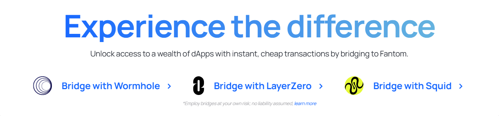

①
Add Fantom network (RPC + Chain ID)
Configure Fantom in your wallet using trusted network details. Wrong chain selection is the #1 cause of confusion.
This is a practical, security-first guide to Fantom Swap: how swaps work on Fantom (EVM), what you really pay (pool fees + slippage + gas), how to route trades safely, how to verify results on the explorer, and how to troubleshoot the most common “failed swap / wrong token / missing balance” problems.
Configure Fantom in your wallet using trusted network details. Wrong chain selection is the #1 cause of confusion.
Keep FTM in your wallet to pay for approvals and swaps. Without gas, you can’t complete or fix anything.
Route quality determines price impact. Use reputable DEXes and avoid illiquid pairs and fake tokens.
Wallet UIs can lag. Use the explorer to verify swap tx status, token contracts, and balances.
Fantom Swap means trading tokens on Fantom using decentralized exchanges (DEXes). Swaps are on-chain transactions: you typically approve a token, then execute the swap through a router contract. Operational success comes down to correct network setup, gas planning, verified token contracts, and slippage discipline.
Trading tokens on Fantom with EVM wallets, managing positions, and moving between stablecoins and ecosystem assets.
Fake tokens, low liquidity, high slippage, and unsafe approvals. Always verify contracts on explorer.

Setting up Fantom correctly in your wallet prevents most swap issues. Fantom Opera (mainnet) is commonly configured with Chain ID 250, gas token FTM, and explorer ftmscan.com.
| Parameter | Value | Why it matters |
|---|---|---|
| Network name | Fantom Opera | So you know you’re on the correct Fantom network |
| Chain ID | 250 | Critical to prevent wrong-chain swaps |
| Currency (gas token) | FTM | Needed for approvals and swaps |
| Explorer | https://ftmscan.com | Verification source of truth |
On Fantom, swap costs are usually the combination of: (1) gas in FTM, (2) pool/router fees, and (3) slippage / price impact. Many “bad swaps” are not gas-related — they’re liquidity and slippage problems.
A “swap” is usually routed through a DEX router contract that chooses one or multiple pools. Route quality depends on liquidity depth, price impact, and whether the token contracts are legitimate.
On Fantom, DeFi usage typically involves token approvals and swaps. The main avoidable risks are malicious approvals, fake token contracts, and swapping into illiquid pools with high slippage.
| Action | What it does | Common mistake |
|---|---|---|
| Approve token | Grants a contract permission to spend your token | Unlimited approvals to unknown routers |
| Swap | Trades token A for token B on a DEX | Swapping spoofed tokens or low-liquidity pairs |
Use these reputable references for Fantom swapping context, verification, and security hygiene:
Fantom Swap refers to swapping tokens on Fantom via DEXes. Swaps are on-chain transactions that may require approvals and gas in FTM.
You pay gas in FTM, plus pool/router fees and slippage/price impact depending on liquidity.
Fantom Opera mainnet is commonly configured with Chain ID 250. Confirm settings with trusted registries like Chainlist.
Common causes include insufficient FTM gas, slippage settings, low liquidity, or swapping a wrong/fake token contract. Verify on explorer.
Most common causes: wallet is on the wrong network, token isn’t added in the wallet UI, or you used the wrong token contract address. Verify on FTMScan first.
Slippage is the difference between expected and executed price. High slippage often indicates low liquidity or volatility and can lead to bad execution.
Yes. Use an allowance tool like Revoke.cash while connected to Fantom, and revoke approvals you no longer need.
The main explorer is FTMScan (ftmscan.com). Use it to verify tx status, token contracts, and balances.
This is usually wallet/RPC caching. Trust the explorer, reconnect your wallet, refresh token lists, or switch RPC endpoints from trusted sources.
Verify the domain, start with a small amount, use minimal approvals, confirm token contracts on explorer, and keep gas buffers for revokes and retries.